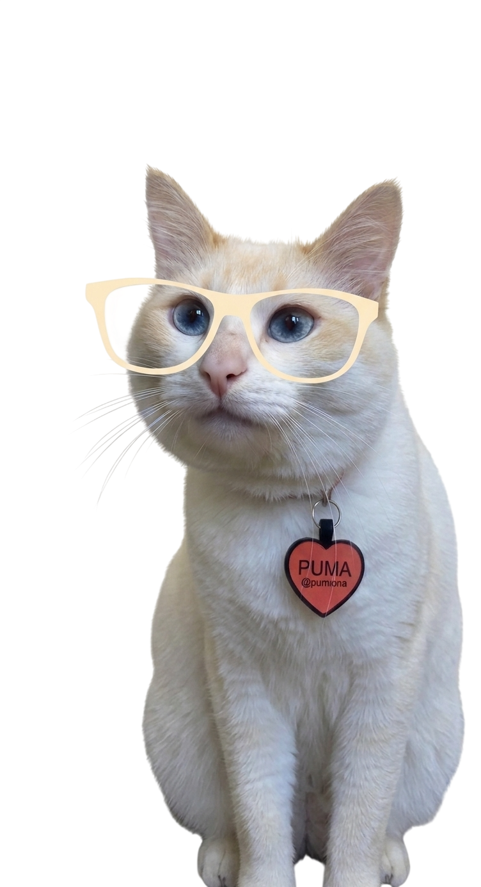

Personal Pet em São Paulo-SP
Cuidados personalizados para o seu pet.
Pet sitter e Cat sitter com quem entende e ama o que faz.
Quem Sou Eu
Sobre
Dedicação, afeto e preparo técnico para cuidar do seu melhor amigo.
Tia Nina
Apaixonada pelos animais desde sempre, transformei meu amor em profissão para que você possa viajar ou trabalhar com o coração tranquilo. Cada visita é pensada respeitando o jeitinho, a rotina e o tempo de cada pet.
Mais do que companhia e brincadeiras, busco sempre unir afeto e conhecimento técnico: possuo treinamento de Pet Sitter pela Pet Anjo, formação em Banho e Tosa, capacitação em Primeiros Socorros Pet e sou graduanda em Medicina Veterinária.
Qualificações
Atendimento em Domicílio
Nossos Cuidados
Seu pet no conforto e segurança do próprio lar, mantendo a rotina que ele já ama enquanto você precisa se ausentar.
Visitas Pet Sitter
Vai precisar se ausentar e não pode levar o Pet junto? O serviço de Pet Sitter é o que você precisa! Uma “babá” para seu pet com todo carinho e segurança.
Visitas Cat Sitter
Vai precisar se ausentar e sabe que gatinho também merece atenção redobrada? Uma “babá” com conhecimento em felinos para cuidar do seu gato sem estresse!

Cupons & Recomendações
Nina Indica
Cupons exclusivos para suas compras e uma curadoria especial de achadinhos para o seu pet e sua casa!
Cupom de Desconto Petz 10% OFF - NINAINDICA
Garanta 10% de desconto em rações, brinquedos, medicamentos e acessórios em todo o site.
Cupom de Desconto Cobasi 10% OFF - Compra10
Aproveite 10% de economia nas suas compras online de itens para seu pet, casa e jardim.
Likes de Achados
Curadoria com os melhores produtinhos, itens úteis para casa e achados testados com ótimo custo-benefício!
Onde a Nina Atende
Localização
Atendimento com carinho e dedicação na Região Central e Zona Leste de São Paulo.
Principais Bairros Atendidos:
Tire suas dúvidas
Perguntas Frequentes
Tudo o que você precisa saber sobre o atendimento domiciliar, segurança e cuidados para o seu pet.
Os cuidados domiciliares são pensados para que seu animalzinho fique seguro, tranquilo e confortável no próprio lar na sua ausência. Cada visita tem duração a partir de 1 hora e inclui:
- Reposição cuidadosa de alimento e troca de água fresca;
- Higienização completa do ambiente (caixas de areia para gatinhos ou tapetinhos para cães);
- Interação com brincadeiras, estímulos e muito carinho no tempo de cada pet;
- Preparo em Primeiros Socorros para total segurança;
- Relato completo da visita com fotos e vídeos em tempo real.
*Para cães (Pet Sitter), também há a possibilidade de incluir passeio na rua por uma taxa extra sob consulta.*
Em todas as visitas eu envio um relato completo no WhatsApp com mensagens detalhadas, fotos e vídeos em tempo real. Assim, você acompanha como foi a alimentação, as brincadeiras e o bem-estar do seu pet, matando a saudade com a certeza e a tranquilidade de que ele está sendo muito bem cuidado e amado.
Sim, com certeza! A visita prévia é um momento indispensável antes do período contratado. É nela que vou até a sua casa para conhecer você e o seu pet no território dele, entender sua rotina, particularidades, manias, horários e alinhar todos os detalhes para garantir um cuidado personalizado, seguro e com zero estresse.
Atendo a Região Central e Zona Leste de São Paulo, com atendimento frequente em bairros como Mooca, Belém, Ipiranga e arredores. Se você estiver em uma região próxima, entre em contato pelo WhatsApp para verificarmos a rota e a disponibilidade na agenda para o seu endereço!
A administração de medicamentos depende da situação específica, do tipo de remédio, da via de administração e do comportamento do pet. Como estudante de Medicina Veterinária e com preparo em primeiros socorros, prezo sempre pela máxima responsabilidade e segurança. Conversamos previamente sobre a prescrição médica e a rotina do tratamento para alinharmos e confirmarmos a viabilidade desse cuidado com carinho.